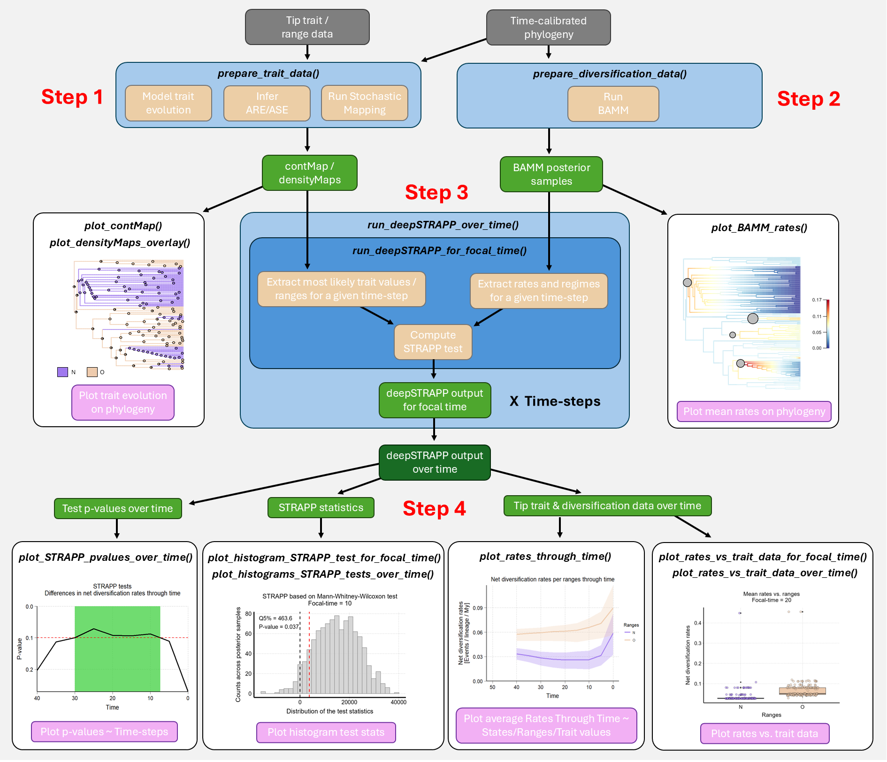

The R package deepSTRAPP employs time-calibrated phylogenies and trait data to test for differences in diversification rates between traits over evolutionary time. It handles continuous, categorical, and biogeographic trait data and extends the STRAPP test of BAMMtools::traitDependentBAMM() from the present day to any time step along a phylogeny.
🎯 Summary
deepSTRAPP models independently the evolutionary history of continuous, categorical, or biogeographic trait data and the diversification dynamics of a clade, then tests for a relationship between ancestral trait values / states / ranges and diversification rates at any point in time. This flexibility allows users to identify the specific time-frames of significance during which diversification dynamics diverged across traits or geographic regions, thereby disentangling the relative contributions of past versus recent processes in shaping present biodiversity patterns.
The statistical framework
deepSTRAPP statistical framework is an extension of the STructured RAte Permutations on Phylogenies (STRAPP) test. STRAPP tests are based on block-permutations: rates data are randomized across tips within blocks defined by the diversification regimes identified on each tip (typically inferred with BAMM). Permuting within regimes rather than across the whole tree provide the correct error structure to account for the phylogenetic pseudoreplication of rates occurring between tips sharing the same macroevolutionary regime. It requires multiple independent associations between character states and diversification to yield a significant macroevolutionary signal (Rabosky & Huang, 2016).
Applications
In the context of historical biogeography, deepSTRAPP provides a powerful analytic framework to investigate the Diversification Rate Hypothesis (DRH). The DRH posits that the current heterogeneity in diversity patterns, such as the Latitudinal Diversity Gradient, is mainly due to differences in diversification rates between bioregions. This hypothesis is typically assessed by comparing diversification rates across present-day tips between bioregions, for example with a STRAPP test. However, such tests only compare current rates of diversification that may not be informative about the long-term past dynamics shaping present-day biodiversity. deepSTRAPP overcomes this methodological gap: it enables users to test the DRH by comparing diversification rates at any time step along evolutionary time, providing a quantitative testing framework to disentangle effects of past and current dynamics in explaining current patterns of biodiversity.
Beyond the biogeographic context, deepSTRAPP can test for an evolutionary relationship between phenotypic evolution and diversification dynamics, enabling the detection of the timing of adaptive radiations linking changes in trait states and bursts in diversification. It provides an alternative approach to state-dependent speciation and extinction (SSE) models that jointly model trait evolution and diversification dynamics but are not designed to test for differences at a given point in time.
deepSTRAPP is especially suited for large phylogenies as the power of the statistical tests is limited by the number of diversification regime shifts detected on the phylogeny and used to perform permutation tests (e.g., Doré et al., 2025). Each macroevolutionary regime acts as an independent event used to test for differences, therefore the sample size of the tests is conditioned by the number of macroevolutionary regimes identified. Larger phylogenies tend to carry more regime shifts, thus hold more information susceptible to yield a significant test result.
Workflow
A full deepSTRAPP workflow runs as follows:
- Step 1: Map trait evolution
- Step 2: Infer diversification dynamics (typically with BAMM)
-
Step 3: Run deepSTRAPP
- Step 3.1: Extract trait values, diversification rates, and regimes at a given time in the past
- Step 3.2: Run a STRAPP test
- Step 3.3: Repeat steps 3.1 & 3.2 for many time steps along evolutionary time
-
Step 4: Summarize test results

Figure 1: Simplified deepSTRAPP workflow showing the main functions (in italics) involved in each step. Input data in grey. Data processing in blue (main) and beige (internal). Intermediate objects in green. Final outputs in pink.References:
STRAPP test: Rabosky, D. L., & Huang, H. (2016). A robust semi-parametric test for detecting trait-dependent diversification. Systematic Biology, 65(2), 181-193. https://doi.org/10.1093/sysbio/syv066.
deepSTRAPP application: Doré, M., Borowiec, M. L., Branstetter, M. G., Camacho, G. P., Fisher, B. L., Longino, J. T., Ward, P. S., & Blaimer, B. B. (2025). Evolutionary history of ponerine ants highlights how the timing of dispersal events shapes modern biodiversity. Nature Communications, 16, 8297. https://doi.org/10.1038/s41467-025-63709-3
📩 Installation
deepSTRAPP works on R version 4.4 or more. Be sure to have an R version that is compatible.
See https://CRAN.R-project.org/.
From CRAN, for the latest release:
install.packages("deepSTRAPP")From GitHub, for the current development version, including all example datasets:
library(devtools)
# If you want to have access to the vignettes/tutorials locally, run:
remotes::install_github(repo = "MaelDore/deepSTRAPP")
# Altough, this is time-consuming, you can also opt for this light installation:
remotes::install_github(repo = "MaelDore/deepSTRAPP", build_vignettes = FALSE)
# You will not have access to the vignettes/tutorials within R, but can still acess them through this website.
# See the dedicated Sections below.You may need additional tools for package compilation such as Rtools (Windows) and Xcode (Mac OS).
See this page for details.
🔗 Dependencies
deepSTRAPP relies on other software and R packages to perform some of its core tasks. R package dependencies will automatically be downloaded and installed alongside deepSTRAPP. However, R packages that are not currently available on CRAN, and external software may need to be installed independently.
- The C++ software BAMM is used to model diversification dynamics on time-calibrated phylogenies. It is needed by deepSTRAPP to obtain estimates of diversification rates along branches. You can install the latest version of BAMM from its official website. You will later need to provide to deepSTRAPP the path to your BAMM installation folder as an argument to the dedicated function [prepare_diversification_data()], so it can call BAMM within R to perform its tasks.
Reference:
Rabosky, DL. Automatic detection of key innovations, rate shifts, and diversity-dependence on phylogenetic trees. PLoS One 9, e89543 (2014). DOI: https://doi.org/10.1371/journal.pone.0089543
- The R package BioGeoBEARS is used to infer ancestral ranges on time-calibrated phylogenies. It is needed by deepSTRAPP to perform the tests based on biogeographic ranges. You can install the latest version of BioGeoBEARS from its author’s repository on GitHub:
For more information, please refer to the official BioGeoBEARS Wiki.
Reference:
Matzke, Nicholas J. (2018). BioGeoBEARS: BioGeography with Bayesian (and likelihood) Evolutionary Analysis with R Scripts. version 1.1.1, published on GitHub on November 6, 2018. DOI: http://dx.doi.org/10.5281/zenodo.1478250
- The R package contsimmap is used to produce stochastic character maps of continuous trait data on phylogenies (i.e., continuous stochastic maps). It is needed by deepSTRAPP to propagate the uncertainty in ancestral trait inferences within tests based on continuous traits. You can install the latest version of contsimmap from its author’s repository on GitHub:
Reference:
Martin, B. S., & Weber, M. G. (2026). Stochastic character mapping of continuous traits on phylogenies. Systematic Biology, syag031. DOI: http://doi.org/10.1093/sysbio/syag031
- Archived copies of the non-CRAN R package dependencies are also provided through an alternative repository to ensure long-term compatibility and reproducibility, even if the development versions of these packages change over time.
install.packages("drat")
drat::addRepo("maeldore", "https://maeldore.github.io/drat")
install.packages(c("BioGeoBEARS", "contsimmap"))🖥️ Website
A companion website is available to browse interactively the different tutorials and functions of deepSTRAPP at this URL: https://maeldore.github.io/deepSTRAPP/.
An overview of all functions and datasets is available here.
🕹️ Quick-to-run example
A simple use-case that shows how deepSTRAPP can be used to test for differences in diversification rates between two trait states along evolutionary times is available here and within R: vignette("main_tutorial").
This tutorial presents the main functions in a typical deepSTRAPP workflow.
For more advanced uses, please refer to the vignettes/tutorials below.
📜 Advanced uses / tutorials
Tutorials are available to explore more advanced usages of deepSTRAPP. They provide explanations on available arguments and interpretations of results of deepSTRAPP across multiple types of data. They are listed below, in the companion website, and in this vignette: vignette("deepSTRAPP").
1/ Full deepSTRAPP workflows on different types of data
-
1.1/ Full deepSTRAPP workflow for continuous trait data:
vignette("deepSTRAPP_continuous_data"). -
1.2/ Full deepSTRAPP workflow for categorical trait data with 3-levels:
vignette("deepSTRAPP_categorical_data"). -
1.3/ Full deepSTRAPP workflow for biogeographic range data:
vignette("deepSTRAPP_biogeographic_data").
2/ Explore options for trait evolution
-
2.1/ Model evolution of continuous trait data:
vignette("model_continuous_trait_evolution"). -
2.2/ Model evolution of categorical trait data:
vignette("model_categorical_trait_evolution"). -
2.3/ Model evolution of biogeographic range data:
vignette("model_biogeographic_range_evolution").
3/ Explore options for BAMM
-
Model diversification dynamics with BAMM within deepSTRAPP:
vignette("model_diversification_dynamics").
4/ Explore the STRAPP test options
-
Test different hypotheses:
vignette("explore_STRAPP_test_types").- Type of STRAPP tests: two-tailed vs. one-tailed.
- Continuous: “negative” or “positive” correlation.
- Binary with hypothesis: (A > B) vs. (B > A).
- Multinominal: Hypotheses for all post hoc tests.
5/ Plot rates through time (RTT)
-
Explore options for plotting diversification rates through time in relation to trait data:
vignette("plot_rates_through_time").
6/ Handle uncertainty
-
Handle uncertainty in trait and rate estimates:
vignette("handle_uncertainty").Explore the three strategies available:
- ‘rates_only’: Only accounts for diversification-rate uncertainty across BAMM posterior samples.
- ‘paired’: Accounts for both diversification-rate and ancestral trait/range reconstruction uncertainty by pairing BAMM posterior samples with stochastic maps.
- ‘full’: Accounts for both diversification-rate and ancestral reconstruction uncertainty by evaluating every combination of BAMM posterior samples and stochastic maps.
7/ Import external analyses
-
Import external analyses:
vignette("import_external_analyses").Import and format results of external analyses of trait-evolution histories and diversification dynamics, and make them ready-to-use as inputs for a deepSTRAPP run.
8/ Cut phylogenies
-
Cut different types of (mapped) phylogenies for a given focal-time:
vignette("cut_phylogenies").- time-calibrated phylogenies.
- contMap for continuous traits.
- densityMap for categorical and biogeographic traits.
- simmaps for categorical and biogeographic traits.
- BAMM_object for diversification dynamics.
Alternatively, if you prefer to view the vignettes in R, you can install the package with build_vignettes = TRUE. But be aware that some vignettes can be slow to generate.
remotes::install_github(repo = "MaelDore/deepSTRAPP",
dependencies = TRUE,
upgrade = "ask",
# Time-consuming, but needed if you want to have access to the vignettes/tutorials
build_vignettes = TRUE)
# Access vignettes within R
vignette("deepSTRAPP")
# You can also use this to open access to all local vignettes in an HTML Brower
utils::browseVignettes(package = "deepSTRAPP")🐛 Found a bug?
Thank you for finding it! Head over to the GitHub Issues tab and let me know about it.
You can also send me an e-mail.
✒️ How to cite deepSTRAPP
For any use of deepSTRAPP:
Doré, M., & Blaimer, B. B., deepSTRAPP: Testing for differences in diversification rates over deep evolutionary time. (DOI TBA)
As deepSTRAPP relies strongly on functions designed for the phytools R package, it is good practice to also cite this package:
Revell, L. J. (2024) phytools 2.0: an updated R ecosystem for phylogenetic comparative methods (and other things). PeerJ, 12, e16505. https://doi.org/10.7717/peerj.16505.
If you use the modeling tools for continuous and categorical trait evolution embedded in the function prepare_trait_data(), you should cite the R package geiger:
Pennell, M.W., J.M. Eastman, G.J. Slater, J.W. Brown, J.C. Uyeda, R.G. FitzJohn, M.E. Alfaro, and L.J. Harmon. 2014. geiger v2.0: an expanded suite of methods for fitting macroevolutionary models to phylogenetic trees. Bioinformatics 30:2216-2218. https://doi.org/10.1093/bioinformatics/btu181.
If you specifically use the function prepare_trait_data() to produce continuous stochastic maps, you should cite the R package contsimmap:
Martin, B. S., & Weber, M. G. (2026). Stochastic character mapping of continuous traits on phylogenies. Systematic Biology, syag031. https://doi.org/10.1093/sysbio/syag031.
If you use the modeling tools for historical biogeography embedded in the function prepare_trait_data(), you should cite the R package BioGeoBEARS:
Matzke, N. J. (2013). Probabilistic historical biogeography: new models for founder-event speciation, imperfect detection, and fossils allow improved accuracy and model-testing. Frontiers of Biogeography, 5(4). https://doi.org/10.21425/F5FBG19694.